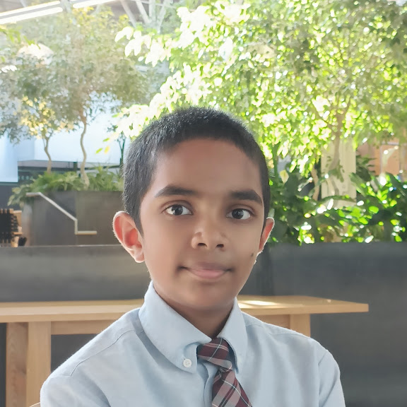

I have a deep passion towards Research & Cardiology
as I have always been curious about the human body.
Research is my way to learn and explore new things.
While Cardiology is topic we know a lot about,
however there are always new things to learn about
